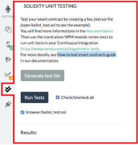

Unit Testing¶
Click the “double check” icon to get to the unit testing plugin. If you don’t see this icon, go to the plugin manager and load up the unit testing plugin.

Generate test File¶
This create a new solidity file in the current folder suffixed with _test.
This file contains the minimun you need for running unit testing.
Run Tests¶
This execute tests. The execution is run in a separate environment and the result is displayed below.
| Available functions | Supported types |
| ————- | ————- |
| Assert.ok() | bool |
| Assert.equal() | uint, int, bool, address, bytes32, string |
| Assert.notEqual() | uint, int, bool, address, bytes32, string |
| Assert.greaterThan() | uint, int |
| Assert.lesserThan() | uint, int |
see https://github.com/ethereum/remix/blob/master/remix-tests/tests/examples_4/SafeMath_test.sol for some code sample
Continuous integration¶
remix-tests is also a CLI, it can be used in a continuous integration environement which support node.js. Please find more information in the remix-test repository
See also: example Su Squares contract and Travis build that uses remix-tests for continuous integration testing.